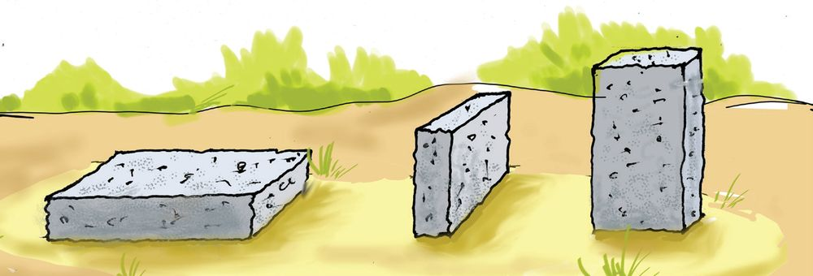
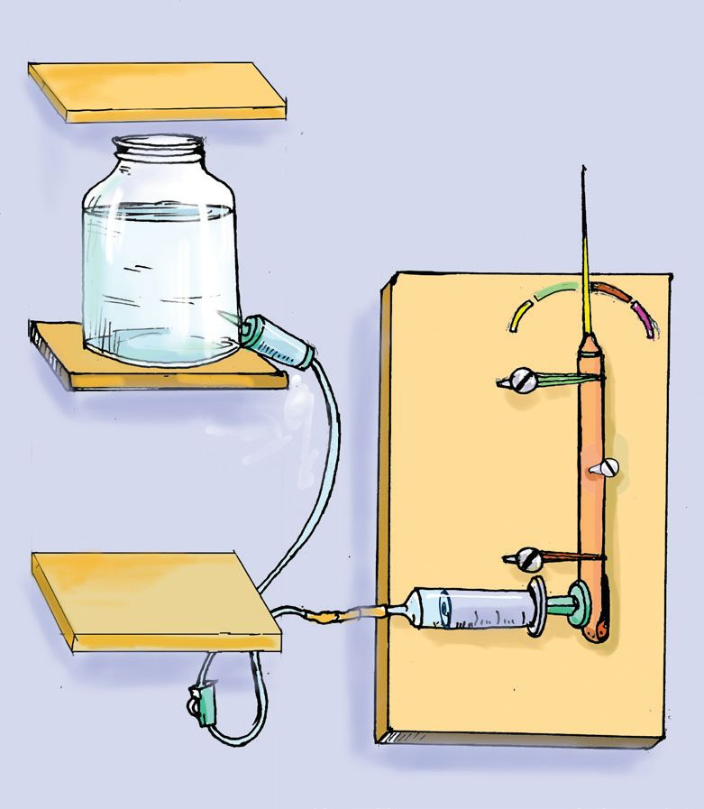
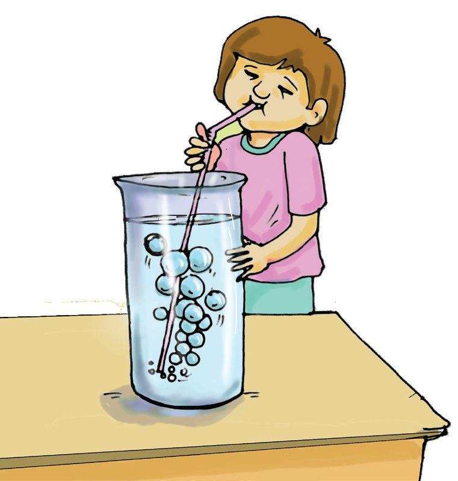
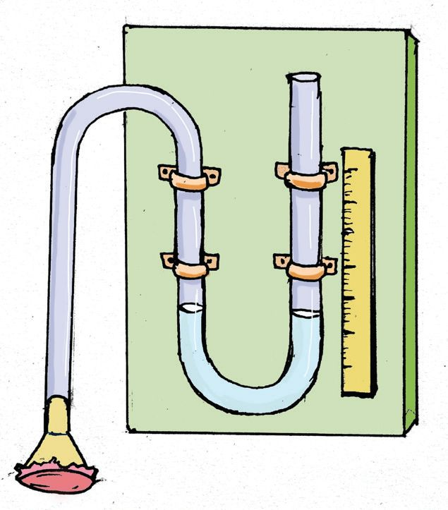

3
The road ahead is
muddy. The lorry will
get stuck
3
PRESSURE
If a wooden
plank is placed,
it won't
Fig. 3.1
Why did the driver comment like this?
We have learnt about different types of forces. The earth exerts an
attractive force on all objects. That is the weight of the object. Let's
now have a look at the figure given below, in which the same weight is
applied in two different ways.
Fig 3.2
37
Page 38
Figure fig_ch02_p038_01 (Page 38)
BASIC SCIENCE - VIII
A brick is placed vertically and then horizontally on a
sponge. In both cases, does the weight of the brick remain
the same? Are the compressions on the sponge equal?
The weight of the child remains the same whether
they stand or lie on the mattress. Yet, the mattress is
compressed more while standing. What could be the
reason for this? Let's do an activity
Fig. 3.3
Fix a single nail on the cardboard as shown in the figure
and place a balloon on top of it. Place a small weight on the
balloon. Does the balloon burst? Now, nail multiple pins
very close to each other as shown in the second figure.
Place the same weight on top of the balloon. Observe the
result. Record the observations in the table below.
Area of Surface in
Contact
Less / More
Situation
Brick on a
sponge
When placed vertically
Child on the
mattress
While standing
When placed horizontally
While lying down
Balloon on the When used a single pin
pin(s)
When used multiple pins
Table3.1
Analyze the table. Even when the same force is applied
in each case, the results vary depending on the change
in surface area in contact. This variation is due to the
difference in pressure. What is pressure?
Pressure is the force acting normally per unit area.
So far, I’ve run ahead
and won. I’ll win
again!
From here on,
I’ll be the one to
reach first, just
watch!
Fig. 3.4
Who will win the race? Write your opinion.
What could be the reason?
Measurement of Pressure
See the figure (3.5) of two concrete slabs placed in sand.
Each of them is made of cubes weighing 18 N fixed together.
The area of one side of the cube is 0.36 m2 (See fig 3.6).
Referring to the figures, complete the following table.
(1)
0.36 m2
18 N
Fig. 3.6
(2)
Fig. 3.5
39
Page 40

Figure fig_ch02_p040_01 (Page 40)
BASIC SCIENCE - VIII
Measurements
Slab 1
Slab 2
Force experienced on the sand
Surface area of contact
Force experienced per unit area
Fig. 3.2
The weight of the slab acts normally on the sand. This is
called thrust.
The force acting normally on a surface is called thrust.
We have found the force acting normally per unit area. This
is pressure. Let’s now write an equation for pressure.
If pressure is denoted by P, thrust by F and area by A,
then,
F
Thrust
P=
Pressure =
A
Area
What would be the unit of Pressure?
Unit of Pressure =
Unit of thrust
Unit of area
The SI unit of pressure is pascal
1 pascal = 1 N/m2
Now, find out the pressure exerted by the above slabs, on
the sand.
• Pressure exerted by slab 1 = ...........................
• Pressure exerted by slab 2 = ............................
Let us analyse a different situation.
A concrete block weighing 100 N is placed on sand in
three different ways as shown in the figure (3.7).
In which position will the highest pressure be exerted
on the sand?
•
Which position will cause the concrete block to sink
deeper into the sand? Why?
When thrust remains constant, the pressure is inversely
proportional to the surface area. This means, when the
surface area increases, the pressure decreases and vice versa.
Now you can explain the reason why the driver commented
as the lorry would not get stuck in the mud if a wooden
plank is put.
Try to lift your school bag by tying it with a thin twine.
How do you feel? What if you lift it using a wide strap as
shown in the figure? Can you explain the difference by
relating its area to pressure?
Similarly, explain the following situations in the figure.
Suggest more such situations.
Fig. 3.8
Fig.3.9
• The edge of a knife is made thinner.
• The wheels of bulldozers are connected by wide chains.
•
•
41
Liquid Pressure
Do only solids exert pressure? Can't liquids and gases
exert pressure?
Let us try the activity given below.
Tie a polythene cover tightly around your hand as shown
in the figure. Dip your hand into a bucket of water. Does
the cover stick to your hand? This happens due to the
pressure exerted by the water on the polythene cover,
right?
Thus we can understand that, just like solids, liquids can
also exert pressure. Liquids exert pressure on all sides of
the container.
Fig 3.10
What are the factors liquid pressure depends on?
Let us do the following activity
The normal force exerted by a liquid is called thrust.
The thrust that a liquid exerts per unit area is called
liquid pressure.
Make a hole at the bottom of a plastic bottle. Close
the hole and fill the bottle with water. Open the hole
and observe the water jetting out.
Repeat the experiment using bottles of different
shapes and sizes.
• If the force of water jetting out is greater, wouldn't
the pressure also be greater?
Fig. 3.11
• What happens to the water stream when the
water level decreases? What can be inferred from
this?
Pressure increases as the depth in a liquid
increases.
What are the other factors that liquid pressure depends
on?
42
Page 43

Figure fig_ch02_p043_01 (Page 43)
BASIC SCIENCE - VIII
Attach a syringe on a board as shown in the
figure 3.12. Attach one end of the I.V. set tube
to the hub of the syringe. Attach the piston of
the syringe to the bottom end of a pen barrel.
Arrange it so that the pen barrel deflects when
the piston moves. Now fix a thin stick to the
top end of pen barrel as a pointer. Attach the
other end of the I.V. set to the plastic bottle.
Fill the plastic bottle with water and place it
at a higher level than the syringe.
Raise the bottle. The force applied by the
piston will change according to the pressure
of the water. Now you can see the thin stick
deflecting according to the force exerted in
the piston, right?
Plastic bottle
Thin stick
Pen barrel
Syringe
Fig. 3.12
• Raise the bottle further. What do you observe? What is
the reason?
• Repeat the experiment using salt solution instead of
water.
Why does the thin stick deflect more?
Water and saline water have different densities. Density
of saline water is higher than that of water. That is why
the piston moves more causing greater deflection of the
thin stick.
The density of a liquid influences its pressure. If the density
of a liquid increases, the pressure also increases.
Let's list the factors affecting liquid pressure based on the
experiments we have done.
• Height of the liquid column (h)
• Density of the liquid (d)
The instrument used to measure liquid pressure is called
a manometer. Shall we make a manometer?
43
Page 44

Figure fig_ch02_p044_01 (Page 44)

Figure fig_ch02_p044_02 (Page 44)
BASIC SCIENCE - VIII
Manometer
Fix a plastic tube on a board in a U shape. Fill it with
water. Connect a funnel to one end of the tube as shown
in the figure. Make a diaphragm with a balloon on the
mouth of the funnel. Attach a scale to the board. Now the
manometer is ready.
Apply slight pressure with your finger on the balloon.
Do you see any difference in the level of water in the tube?
Fig. 3.13
Apply more pressure. You can see a difference in water
levels also.
Now take different solutions in the beaker and measure
the pressure at different levels. Write your observations
in the table below.
Difference in the water levels of
U -tube/pressure
Position of the funnel
In Water
In Saline water
In Kerosene
On the surface
Midway in the beaker
At the bottom of the beaker
Table 3.3
Analyse the table.
•
In which position is the pressure highest?
•
Which liquid excerts the highest pressure?
Let us try another activity. Fill a deep vessel with water.
Dip a straw into the water and blow gently. Do bubbles
come up?
Fig. 3.14
44
•
What happens to their size when they reach the
surface?
•
Explain their change in size.
Explain why dams are built with a wider base. Can
you think of more situations in daily life where liquid
pressure is experienced?
Gas Pressure
Just like solids and liquids, gases also have the
ability to exert pressure.
As we know, pressure is measured when air is
filled into vehicle tyres.
Pressure is the force exerted by the particles
of a gas on unit area of a surface. This is due to
the collision of gas particles.
Fig. 3.15
The force exerted by a gas normally on a unit area is
gas pressure.
What are the factors influencing gas pressure?
Inflate a balloon at its maximum. What happens when
the balloon is inflated further? Will it eventually burst?
The balloon bursts as it fails to withstand the pressure
inside. Find the change in the number of gas particles, in
figure 3.16, when more air is filled. What can be inferred
from this?
Gas pressure depends on the number of particles. As the
number of particles increases, gas pressure also increases.
Fig. 3.16
Fill the same quantity of air into two balloons of different
sizes. Now the number of gas particles in both balloons
is equal, right? Which of the balloons has more pressure
inside? What can be inferred from this?
Gas pressure depends on its volume.
Leave an inflated balloon in the sunlight. What do you
observe? What is the change in the pressure when the air
inside gets heated up?
Gas pressure depends on its temperature.
When we cook food in a pressure cooker, the pressure
inside increases as the temperature increases.
45
Now list, the factors influencing gas pressure are
•
Number of particles
•
•
Atmospheric Pressure
The atmosphere is a blanket of air surrounding
the Earth. The density of air decreases as we
go higher. Can atmosphere exert pressure?
Do the following activity
Fig. 3.17
Place a scale on the table as shown in the figure.
Drop an ice cream ball on the scale from a small
height. Doesn't the scale fall? Place an A4 size
paper on the scale. Drop the ball again from
the same height. Now, the scale does not fall
down. Why? It is because of the weight of the
air above the paper. The atmospheric pressure
counteracts the force exerted by the ball.
Atmospheric air exerts pressure on objects.
Fig. 3.18
From the above activity, we understood the
influence of atmospheric pressure. What is
atmospheric pressure?
The weight of air column per unit area on the
earth's surface is atmospheric pressure. The
unit of atmospheric pressure is 'bar.'
Is atmospheric pressure the same everywhere on the
Earth? Observe the figure. Which book will experience
the highest pressure? Why?
Fig.3.19
46
Similarly, we know that atmospheric pressure is the weight
of air column experienced per unit area. So, what is the
change that occurs in atmospheric pressure as altitude
increases? Note your inferences.
BASIC SCIENCE - VIII
Atmospheric pressure decreases as height from the Earth's
surface increases.
Atmospheric pressure at sea level is known as standard
atmospheric pressure. It is defined as the weight
of a mercury column that is 0.76 m high, with a unit
cross sectional area, exerting a pressure of 1 atm. The
instrument used to measure atmospheric pressure is a
barometer.
Do you know how strong atmospheric pressure is?
Fig. 3.20
Take an aluminum can and fill it with hot water. Pour out
the hot water and immediately seal the can. Immerse
the can in cold water. What do you observe? (See figure).
When the can cools down, the pressure inside the can
decreases. The external atmospheric pressure is strong
enough to crush the can.
• Calculate the force exerted by atmospheric pressure
on a table surface of area 1 m2. Atmospheric pressure
is 101325 Pascal.
Force =
Pressure × Area
=
1 Pa × 1 m2
101325 N
=
Fig.3.21
This is equivalent to the weight of an object with a mass
of 10339 kg. If such a large force is exerted on the table,
why doesn't it collapse?
Great Strength
In 1654, Otto von Guericke joined
two copper hemispheres (Magdeburg
hemispheres) together to form a
hollow sphere with a diameter of 35.5
centimeters (14 inches). The air was
pumped out of the sphere. Two teams of
horses tried to pull them apart but failed
to seperate the hemispheres. Thus, the
incredible force of atmospheric pressure
was first demonstrated.
Gas pressure is exerted in all directions, similar to
that of liquids.
Let's do another experiment. Fill a glass with water and
cover it with a cardboard. Hold the cardboard with your
hand and turn the glass upside down. Remove your
hands slowly. Does the water fall? The force due to
atmospheric pressure can hold the entire weight of
the water in the glass.
The equilibrium of pressure between gases and liquids
is a common phenomenon occurring in nature.
Pressure Balance
Fig. 3.23
Let's do an activity. Pour water in a flat container. Place a
lit candle in it. Cover the candle with a glass.
Fig.3.24
•
What happens to the candle flame?
•
What happens to the air pressure inside the glass?
•
What is the change in the water level?
The water level remains stable when the pressure
inside the glass and the atmospheric pressure
outside the glass are in equilibrium.
Gently pull back the piston of a syringe and seal
the opening with your hand. Then pull the piston
all the way back and release. What do you see?
Why does the piston go back? Discuss the reason.
3. Observe the picture below. Which of the following jars
containing the same liquid, will experience the highest
pressure at the bottom? Explain why.
a
b
c
4. Cooking is faster in a pressure cooker than in an open
vessel. Explain why.
Extended Activities
1. Conduct a study on the topic 'Rain and Pressure' and
prepare a project report.
2. Attach a pipe to each end of a plastic bottle, ensuring
it airtight. One pipe should be longer and the other
shorter. Place one end of the pipe in a bucket filled
with water and placed at a highest level. Place the
shorter pipe in another vessel. Squeeze and release
the plastic bottle two or three times. Does the water
from the bucket flow into the lower vessel? State the
reason for this.